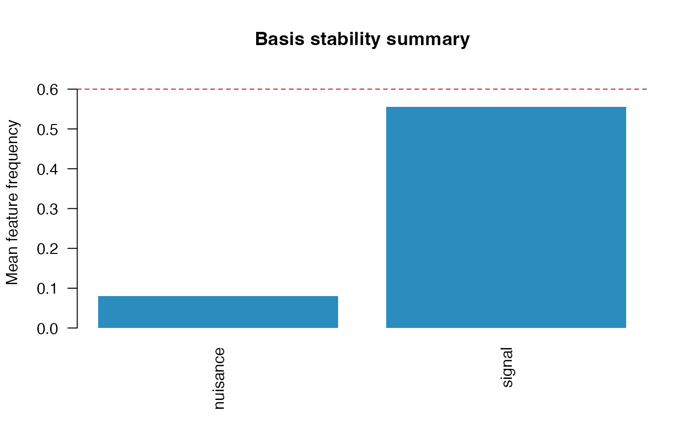

SelectBoost.FDA can fit spline-basis and FPCA
preprocessing directly from raw curves, store the fitted transforms, and
then reuse the same design/selection machinery as before.
Fit preprocessing from raw curves
library(SelectBoost.FDA)
data("motion_example", package = "SelectBoost.FDA")
predictors <- list(
signal = fda_grid(
motion_example$predictors$signal,
argvals = motion_example$grid,
name = "signal",
unit = "time"
),
nuisance = fda_grid(
motion_example$predictors$nuisance,
argvals = motion_example$grid,
name = "nuisance",
unit = "time"
)
)
prep <- fit_fda_preprocessor(
predictors = predictors,
scalar_covariates = motion_example$scalar_covariates,
transforms = list(
signal = fda_fpca(n_components = 3),
nuisance = fda_bspline(df = 5, center = TRUE)
),
scalar_transform = fda_standardize()
)
prep
#> FDA preprocessor
#> functional predictors: 2
#> scalar covariates: 2
#> total blocks: 4
summary(prep)
#> FDA preprocessor summary
#> predictors: 4
#> predictor representation transform n_features
#> signal basis fpca 3
#> nuisance basis bspline 5
#> age scalar standardize 1
#> treatment scalar standardize 1Build a design with the fitted preprocessor
design <- fda_design(
response = motion_example$response,
predictors = predictors,
scalar_covariates = motion_example$scalar_covariates,
preprocessor = prep,
family = "gaussian"
)
head(selection_map(design))
#> feature predictor block position argval representation
#> signal.1 signal_PC1 signal signal 1 PC1 basis
#> signal.2 signal_PC2 signal signal 2 PC2 basis
#> signal.3 signal_PC3 signal signal 3 PC3 basis
#> nuisance.1 nuisance_B1 nuisance nuisance 1 B1 basis
#> nuisance.2 nuisance_B2 nuisance nuisance 2 B2 basis
#> nuisance.3 nuisance_B3 nuisance nuisance 3 B3 basis
#> basis_type transform source_predictor source_representation
#> signal.1 fpca fpca signal grid
#> signal.2 fpca fpca signal grid
#> signal.3 fpca fpca signal grid
#> nuisance.1 spline bspline nuisance grid
#> nuisance.2 spline bspline nuisance grid
#> nuisance.3 spline bspline nuisance grid
#> source_position_start source_position_end source_argval_start
#> signal.1 1 30 0
#> signal.2 1 30 0
#> signal.3 1 30 0
#> nuisance.1 1 15 0
#> nuisance.2 2 29 0.0344827586206897
#> nuisance.3 2 29 0.0344827586206897
#> source_argval_end domain_start domain_end component
#> signal.1 1 0 1 PC1
#> signal.2 1 0 1 PC2
#> signal.3 1 0 1 PC3
#> nuisance.1 0.482758620689655 0 0.482758620689655 B1
#> nuisance.2 0.96551724137931 0.0344827586206897 0.96551724137931 B2
#> nuisance.3 0.96551724137931 0.0344827586206897 0.96551724137931 B3
#> unit feature_index basis_component
#> signal.1 time 1 PC1
#> signal.2 time 2 PC2
#> signal.3 time 3 PC3
#> nuisance.1 time 4 B1
#> nuisance.2 time 5 B2
#> nuisance.3 time 6 B3
#> domain_label
#> signal.1 0 - 1 time
#> signal.2 0 - 1 time
#> signal.3 0 - 1 time
#> nuisance.1 0 - 0.482758620689655 time
#> nuisance.2 0.0344827586206897 - 0.96551724137931 time
#> nuisance.3 0.0344827586206897 - 0.96551724137931 time
selection_map(design, level = "basis")
#> predictor representation basis_type source_representation
#> nuisance.spline nuisance basis spline grid
#> signal.fpca signal basis fpca grid
#> n_components first_component last_component components
#> nuisance.spline 5 B1 B5 B1, B2, B3, B4, B5
#> signal.fpca 3 PC1 PC3 PC1, PC2, PC3
#> domain_start domain_end
#> nuisance.spline 0 1
#> signal.fpca 0 1Fit grouped stability selection
fit <- fit_stability(
design,
selector = "glmnet",
B = 30,
sample_fraction = 0.5,
cutoff = 0.6,
seed = 7
)
fit
#> FDA stability selection
#> family: gaussian
#> features: 10
#> groups: 4
#> replicates: 30
#> cutoff: 0.6
summary(fit)
#> FDA stability selection summary
#> family: gaussian
#> predictors: 4
#> features: 10
#> groups: 4
#> replicates: 30
#> sample fraction: 0.5
#> cutoff: 0.6
#> selected features: 3
#> selected groups: 3
selection_map(fit)
#> feature predictor block position argval representation
#> signal.1 signal_PC1 signal signal 1 PC1 basis
#> signal.2 signal_PC2 signal signal 2 PC2 basis
#> signal.3 signal_PC3 signal signal 3 PC3 basis
#> nuisance.1 nuisance_B1 nuisance nuisance 1 B1 basis
#> nuisance.2 nuisance_B2 nuisance nuisance 2 B2 basis
#> nuisance.3 nuisance_B3 nuisance nuisance 3 B3 basis
#> nuisance.4 nuisance_B4 nuisance nuisance 4 B4 basis
#> nuisance.5 nuisance_B5 nuisance nuisance 5 B5 basis
#> age age age age 1 age scalar
#> treatment treatment treatment treatment 1 treatment scalar
#> basis_type transform source_predictor source_representation
#> signal.1 fpca fpca signal grid
#> signal.2 fpca fpca signal grid
#> signal.3 fpca fpca signal grid
#> nuisance.1 spline bspline nuisance grid
#> nuisance.2 spline bspline nuisance grid
#> nuisance.3 spline bspline nuisance grid
#> nuisance.4 spline bspline nuisance grid
#> nuisance.5 spline bspline nuisance grid
#> age <NA> standardize age scalar
#> treatment <NA> standardize treatment scalar
#> source_position_start source_position_end source_argval_start
#> signal.1 1 30 0
#> signal.2 1 30 0
#> signal.3 1 30 0
#> nuisance.1 1 15 0
#> nuisance.2 2 29 0.0344827586206897
#> nuisance.3 2 29 0.0344827586206897
#> nuisance.4 2 29 0.0344827586206897
#> nuisance.5 16 30 0.517241379310345
#> age 1 1 age
#> treatment 1 1 treatment
#> source_argval_end domain_start domain_end component
#> signal.1 1 0 1 PC1
#> signal.2 1 0 1 PC2
#> signal.3 1 0 1 PC3
#> nuisance.1 0.482758620689655 0 0.482758620689655 B1
#> nuisance.2 0.96551724137931 0.0344827586206897 0.96551724137931 B2
#> nuisance.3 0.96551724137931 0.0344827586206897 0.96551724137931 B3
#> nuisance.4 0.96551724137931 0.0344827586206897 0.96551724137931 B4
#> nuisance.5 1 0.517241379310345 1 B5
#> age age age age <NA>
#> treatment treatment treatment treatment <NA>
#> unit feature_index basis_component
#> signal.1 time 1 PC1
#> signal.2 time 2 PC2
#> signal.3 time 3 PC3
#> nuisance.1 time 4 B1
#> nuisance.2 time 5 B2
#> nuisance.3 time 6 B3
#> nuisance.4 time 7 B4
#> nuisance.5 time 8 B5
#> age <NA> 9 <NA>
#> treatment <NA> 10 <NA>
#> domain_label feature_frequency
#> signal.1 0 - 1 time 1.00000000
#> signal.2 0 - 1 time 0.33333333
#> signal.3 0 - 1 time 0.33333333
#> nuisance.1 0 - 0.482758620689655 time 0.13333333
#> nuisance.2 0.0344827586206897 - 0.96551724137931 time 0.03333333
#> nuisance.3 0.0344827586206897 - 0.96551724137931 time 0.00000000
#> nuisance.4 0.0344827586206897 - 0.96551724137931 time 0.10000000
#> nuisance.5 0.517241379310345 - 1 time 0.13333333
#> age age 0.80000000
#> treatment treatment 0.70000000
#> selected group_id group group_frequency group_selected
#> signal.1 TRUE 1 signal 1.0000000 TRUE
#> signal.2 FALSE 1 signal 1.0000000 TRUE
#> signal.3 FALSE 1 signal 1.0000000 TRUE
#> nuisance.1 FALSE 2 nuisance 0.2666667 FALSE
#> nuisance.2 FALSE 2 nuisance 0.2666667 FALSE
#> nuisance.3 FALSE 2 nuisance 0.2666667 FALSE
#> nuisance.4 FALSE 2 nuisance 0.2666667 FALSE
#> nuisance.5 FALSE 2 nuisance 0.2666667 FALSE
#> age TRUE 3 age 0.8000000 TRUE
#> treatment TRUE 4 treatment 0.7000000 TRUE
selection_map(fit, level = "basis")
#> predictor representation basis_type source_representation
#> nuisance.spline nuisance basis spline grid
#> signal.fpca signal basis fpca grid
#> n_components first_component last_component components
#> nuisance.spline 5 B1 B5 B1, B2, B3, B4, B5
#> signal.fpca 3 PC1 PC3 PC1, PC2, PC3
#> domain_start domain_end mean_feature_frequency
#> nuisance.spline 0 1 0.0800000
#> signal.fpca 0 1 0.5555556
#> max_feature_frequency selected_components
#> nuisance.spline 0.1333333 0
#> signal.fpca 1.0000000 1
selected(fit, level = "basis")
#> predictor representation basis_type source_representation
#> signal.fpca signal basis fpca grid
#> n_components first_component last_component components
#> signal.fpca 3 PC1 PC3 PC1, PC2, PC3
#> domain_start domain_end mean_feature_frequency
#> signal.fpca 0 1 0.5555556
#> max_feature_frequency selected_components
#> signal.fpca 1 1
plot(fit, type = "basis", value = "mean")
The basis-level summary is often the most convenient table for reporting:
-
n_componentscounts the basis coefficients or FPCA scores in each predictor. -
selected_componentsreports how many exceed the stability threshold. -
mean_feature_frequencyandmax_feature_frequencysummarize component-wise stability within each basis-expanded predictor.